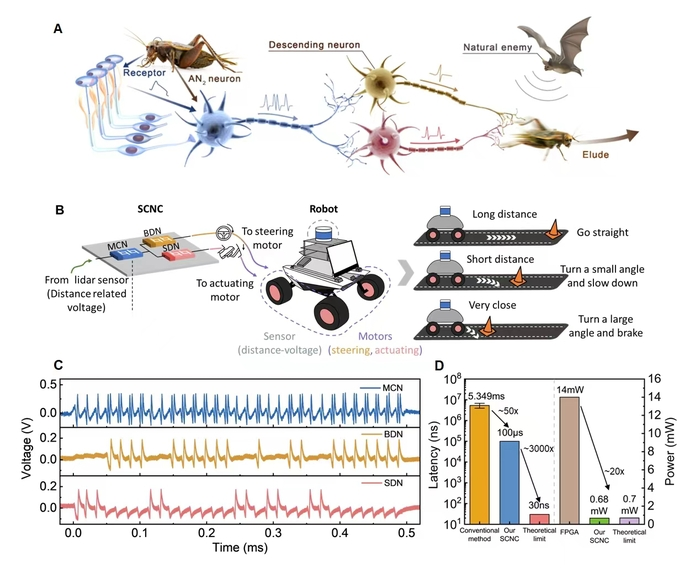

Research advance
Memory and Computing Group Advances Neuromorphic Computing
Biological neurons are central to information processing in the nervous system, and their diverse firing patterns provide an important foundation for efficient computation and communication. Understanding the computational capabilities of these firing patterns is an important route toward brain-inspired intelligence, while artificial neuron circuits capable of reproducing diverse firing behaviours are essential for this work. Conventional CMOS devices, however, lack intrinsic neural dynamics, resulting in complex neuron-circuit designs that are difficult to integrate at high density. Moreover, how biological neurons exploit distinct firing patterns for energy-efficient computation remains insufficiently understood, limiting the implementation and application of these mechanisms in hardware systems.
To address these challenges, the Memory and Computing Group developed a compact Hodgkin–Huxley (H-H) neuron circuit based on NbO₂ memristors. The circuit successfully reproduced 23 firing behaviours reported in biological neurons. By leveraging the intrinsic stochasticity of the devices, the team further realised probabilistic transitions between tonic and bursting activity, expanding the circuit’s firing repertoire.
To explore the computational use of firing patterns, the team constructed a feedforward divergent neural circuit using the H-H neurons. By exploiting probabilistic transitions, integration, and resonance, the circuit validated a mechanism for selective communication between biological neurons. The circuit was subsequently applied to a robotic obstacle-avoidance system, enabling low-latency avoidance. By making fuller use of the intrinsic computational capabilities of diverse neuronal firing patterns, the approach reduced decision latency by more than 50-fold compared with a GPU-based implementation.
This work demonstrates the potential of neuronal firing patterns for efficient computation and provides a new approach to developing more efficient intelligent machines.
The work, titled “Firing Feature-Driven Neural Circuits with Scalable Memristive Neurons for Robotic Obstacle Avoidance,” was published in Nature Communications on 21 May 2024. Dr. Yue Yang and Dr. Fangduo Zhu were co-first authors; Young Associate Research Fellow Xumeng Zhang and Professor Qi Liu were corresponding authors. The research was supported by the National Key R&D Program of China, the National Natural Science Foundation of China, and related funding programs.
生物神经元是神经系统信息处理的核心单元，其多样化的放电模式为高效计算与信息传递提供了重要基础。探索这些放电模式所蕴含的计算能力，是推动类脑智能发展的重要路径；构建能够复现多样放电模式的人工神经元电路，则是开展相关研究的关键基础。然而，传统 CMOS 器件缺乏本征神经动力学特性，导致神经元电路结构复杂、难以高密度集成。此外，生物神经元如何利用不同放电模式实现高能效计算尚未得到系统阐释，限制了相关机制在硬件系统中的实现与应用。
针对上述挑战，Memory and Computing Group 研制了基于 NbO₂ 忆阻器的紧凑型 Hodgkin–Huxley（H-H）神经元电路，成功复现了生物神经元中已报道的 23 种放电行为。团队进一步利用器件的本征随机性，实现了 tonic 与 bursting 状态之间的概率性转变放电，进一步丰富了神经元电路的放电模式。
为探索不同放电模式的计算应用，团队基于所构建的 H-H 电路搭建了前馈发散型神经环路。该环路利用神经元的概率性转变、积分与共振特性，验证了生物神经元之间的选择性通信机制。进一步地，团队将该环路应用于机器人避障系统，实现了低延时避障。该方案充分挖掘不同神经元放电模式的本征计算能力，有效降低了机器人避障决策的延时；相较于 GPU 方案，延时降低超过 50 倍。
该研究揭示了神经元放电模式在高效计算中的潜力，为开发更高效的智能机器提供了新的技术路径。
相关成果以 “Firing Feature-Driven Neural Circuits with Scalable Memristive Neurons for Robotic Obstacle Avoidance” 为题，于 2024 年 5 月 21 日发表在 Nature Communications。复旦大学芯片院杨悦博士、朱方铎博士为论文共同第一作者，张续猛青年副研究员和刘琦教授为论文通讯作者。该研究获得国家重点研发计划、国家自然科学基金等项目支持。
